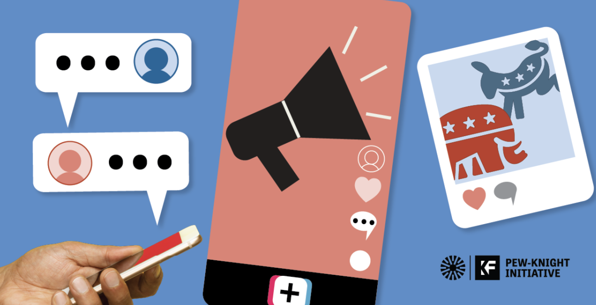

Section 03
Politics & Awareness
TikTok has become a major source of political information for many users, especially younger audiences, but learning about political events and public figures on the platform can be challenging. Because TikTok’s algorithm prioritizes engaging and personalized content rather than accuracy or balance, users may be exposed to incomplete, biased, or misleading perspectives. Short-form videos also simplify complex issues, making it harder to fully understand political topics. This section explores how TikTok shapes political awareness while also creating challenges for finding reliable and well-rounded information online.

Main Discussion
Core Points
Why TikTok can be helpful for political awareness
TikTok can make political information more accessible by introducing users to important events, social issues, and public figures in a way that feels engaging and easy to understand. Many young people who might not follow traditional news sources are exposed to topics like elections, activism, and global events through short videos on their For You Page. This helps increase awareness and encourages users to learn more about issues that affect their communities and the world around them.
Why TikTok can make political learning difficult
At the same time, TikTok can make it harder to fully understand political topics because its algorithm prioritizes entertaining and emotionally engaging content over accuracy or balance. Short videos often simplify complex issues, and users may only see viewpoints similar to their own. This can create misinformation, bias, or incomplete understanding, making it important for users to think critically about the political content they see online.
Evidence
Survey Results

These results are important because they show that most users view political content on TikTok as only slightly trustworthy, rather than fully reliable. This suggests that while people are exposed to political information on the platform, they may still recognize its limits and potential bias. The findings support the idea that TikTok increases political awareness but does not always provide complete or dependable information, highlighting the need for users to think critically about what they see and seek additional sources when learning about political issues.

These results are important because they show that TikTok can play a strong role in increasing political awareness, with the large majority of respondents saying the platform encouraged them to research a political or social issue further. This suggests that even though TikTok content can sometimes be simplified or biased, it still serves as an entry point for users to become more informed.
Why It Matters
Importance
This section matters to my larger research question because it shows how TikTok’s algorithm influences not only entertainment and trends, but also how users learn about political events and social issues. While the platform can increase awareness and encourage further research, it can also present simplified or biased information that shapes how users understand complex topics. These findings support the broader argument that TikTok plays an important role in shaping what people know, believe, and engage with in digital culture.
Next Step
Continue Exploring
Section 02
Identity
How TikTok influences users’ sense of self and personal expression.
Section 02
Consumerism
How TikTok influences products, trends, and buying behavior.
Section 04
Subcultures
How TikTok fosters the creation and spread of online communities and subcultures.
Section 05
Parasocial
How TikTok’s creator culture builds emotional connections with audiences.
Section 06
Reflection
A reflection on the research process, findings, and future questions about TikTok’s cultural impact.
Section 07
Sources
A list of all the sources cited in this project.
Navigation